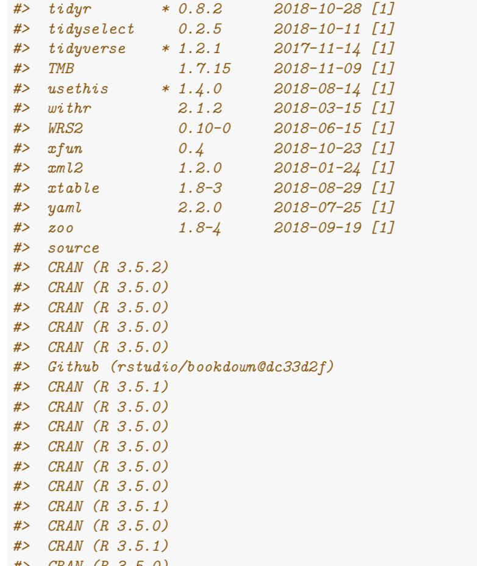

Writing a technical or academic report, or even a presentation, it is sensible to render the (R) code in such a writing reproducible. Same thing applies when asking for help at StackOverflow: you’ll be asked for a reprex.
One aspect for rendering a report reproducible is to include details on the version of packages needed. The well-known command sessionInf() provides the building blocks for that. However, the output of that function can feel verbose, and it consumes a lot of space.
A similar functionality is provided by sessioninfo::session_info(), is also allows for a more fine grained control of the output. However, it also can provide too much information when called without fine tuning. It also does not line wrap its output:

Maybe a cleaner output is achieved if we print only the packages along with their versions, and that as normal text, not formatted as R output.
As an example, let’s load some arbitrary packages.
library(tidyverse)
library(mosaic)
library(plotly)
library(ggrepel)
library(knitr)
library(DiagrammeR)Then let’s extract the loaded packages along with their versions.
si <- sessioninfo::session_info()
pckgs <- map2(si$packages$package,
si$packages$loadedversion,
~ paste0(.x, " ", .y)) %>%
simplify()Finally, print the stuff using this inline code:
- Date: `r si$platform$date`
- Packages: `r pckgs`
- OS: `r si$platform$os`
- Version: `r si$platform$version`And that’s how it could look like: